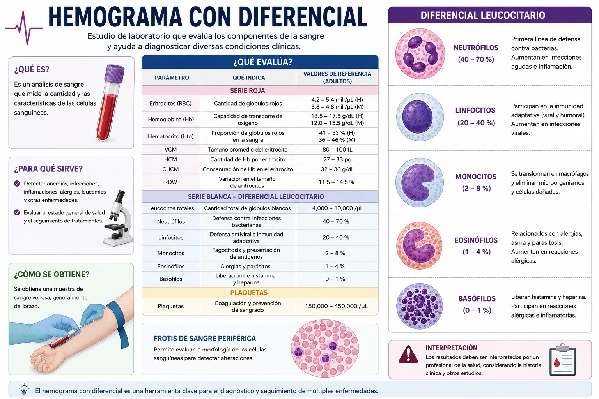
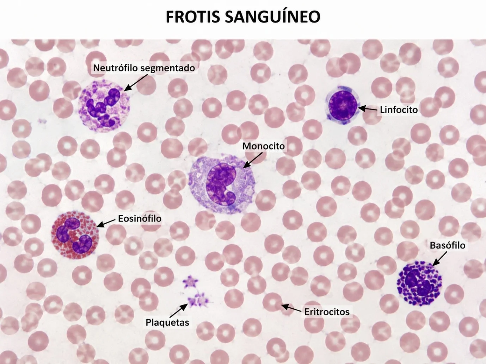
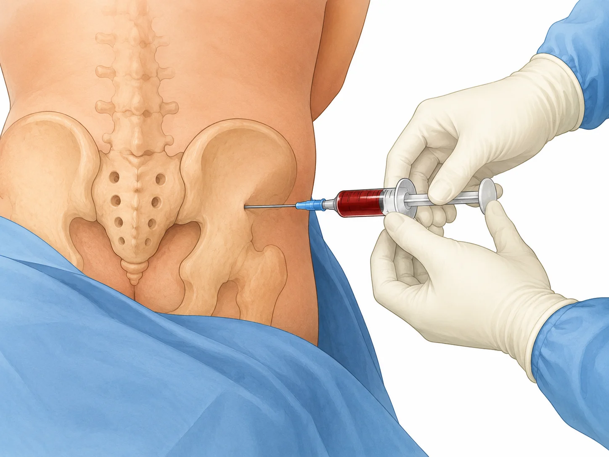

Descripción de exámenes
A continuación se describen tres medios de diagnóstico. Haz clic en cada tarjeta para ver el desarrollo completo: qué es, para qué sirve y las indicaciones de enfermería antes, durante y después en el paciente.

1
Hemograma con diferencial
Evalúa glóbulos rojos, glóbulos blancos y plaquetas, e identifica los tipos de leucocitos.
Leer más →
2
Frotis sanguíneo
Extensión de sangre sobre una lámina para observar las células al microscopio.
Leer más →
3
Medulograma
Aspirado de médula ósea: evalúa directamente la producción de células sanguíneas.
Leer más →Esquema general
Exámenes descritos
Hemograma
con diferencial
con diferencial
Frotis
sanguíneo
sanguíneo
Medulograma